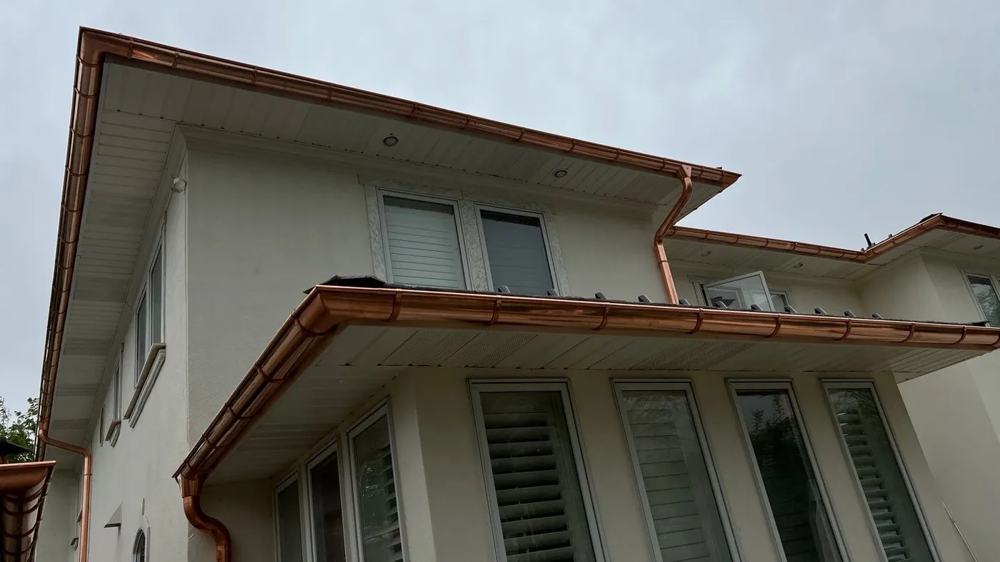

Our work
Recent Projects
Photos from M&M jobs around the Salt Lake Valley.

Free quote · Mon–Fri 8am–5pm
Quote your next project
Tell us about your gutters, roof or siding. We’ll come out, measure and give you a free quote.

Our work
Photos from M&M jobs around the Salt Lake Valley.
Free quote · Mon–Fri 8am–5pm
Tell us about your gutters, roof or siding. We’ll come out, measure and give you a free quote.